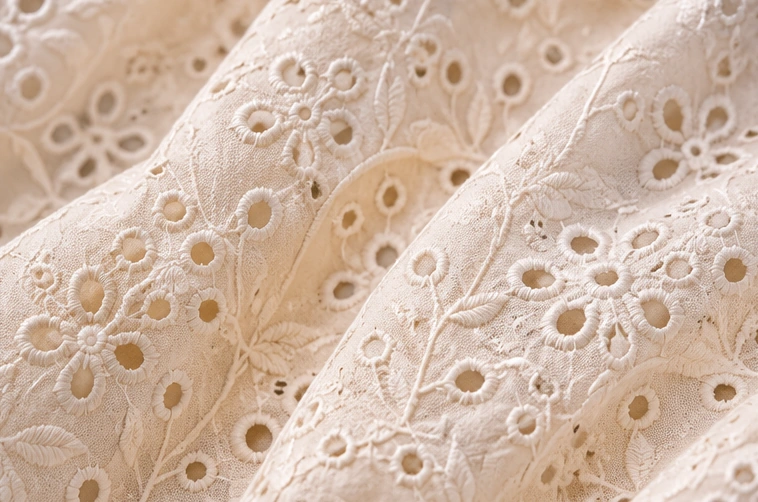
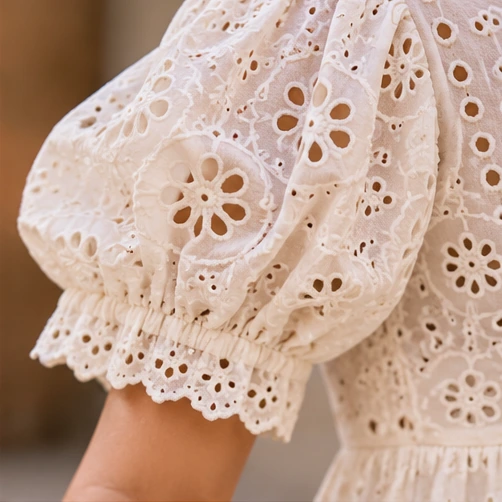

02 / SURFACE DETAIL
Schiffli & cutwork
Openwork motifs, floral eyelets and embroidered borders create dimension when the design calls for these details.
Explore Schiffli styles ↗Explore the material families and surface details that shape women's western wear collections at Manisha Overseas.
Explore collections ↗
Fabric choice influences the drape, comfort, silhouette and finishing of a garment. Cotton-led styles can be developed across dresses, tops and relaxed separates, subject to the selected fabric and specification.
Explore cotton dresses ↗
Openwork motifs, floral eyelets and embroidered borders create dimension when the design calls for these details.
Explore Schiffli styles ↗
Print-led collections bring colour, pattern and seasonal direction into dresses, blouses and coordinated looks.
Explore printed styles ↗
Surface work, hems, borders and finishing details are considered as part of the complete silhouette and buyer brief.
View detailed styles ↗Send a reference, preferred fabric direction, size range, target market and order requirements. Material availability, design feasibility, sampling and commercial terms are reviewed case by case.
Discuss a fabric or style ↗